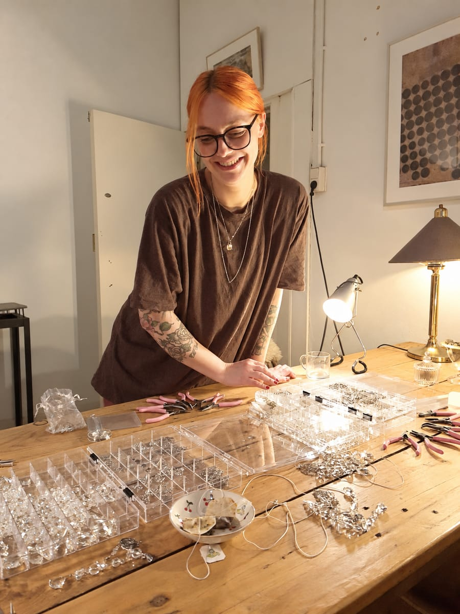

Playing with light and color, that's what I love most
I'm Kiki: a maker, a nature lover, and an endlessly curious person. I hand-make crystal suncatchers that capture sunlight and send little rainbows dancing through your home. In my workshops I help you make one of these special light-catchers yourself.
Always making something
For as long as I can remember, I've loved working with my hands. As a child, I was always drawing, crafting, and experimenting with different materials. Luckily, I've never lost that urge to make things.
I light up at colors, sparkle, unusual shapes, and that moment when separate materials slowly become one. The light effects of crystals fascinate me most of all: when sunlight falls on a crystal, it breaks and little rainbows appear everywhere, bringing a space to life.
In awe of the world around us
I feel most at home in nature. I love the way light falls through the leaves, and I love wondering what an animal's inner life might be like.
As a permaculture gardener, I'm fascinated by ecosystems. In my own permaculture vegetable garden, I try to mimic them as closely as possible, paying attention to how plants, animals, and soil life all connect.
Beyond my garden, I'm endlessly curious too. I love reading non-fiction and digging into topics like biology, archaeology, ancient civilizations, health, consciousness, technology, the cosmos, and the intelligence of all living things. I'm especially drawn to the big questions: how did everything come to be, how does the world work, and what's still left to discover?

Room to discover for yourself
I bring that same curiosity into my workshops. You won't get a rigid step-by-step plan that leads everyone to exactly the same result. You choose the crystals, beads, and metal charm that suit you, and discover along the way what takes shape.
There's room to play with light and color, make your own choices, and lose yourself for a while in working with your hands. You'll go home with a suncatcher that's uniquely yours, and hopefully with a renewed sense of creativity and wonder.
Where to find me
Workshops held in studios across the Netherlands.